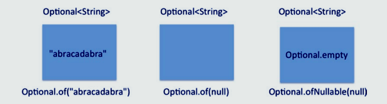
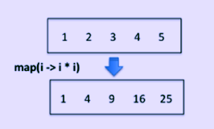
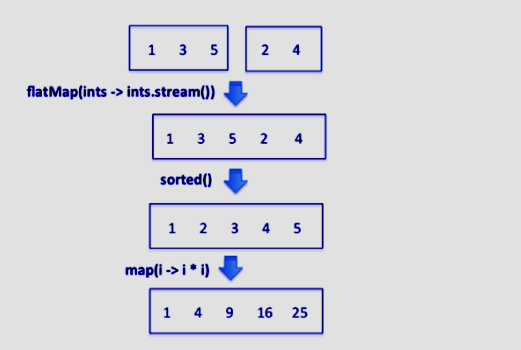

JAVA SE 8
Java Stream API
Objetivos são:
- Desenvolver códigos para extrair dados de um objeto usando me´todos peek() e map() inlcuindo versões primitivas do método map()
- Pesquisar por dados usando métodos de pesquisa das classes Stream incluindo findFirst, finndAny, anyMatch, allMatch, noneMatch
- Desenvover códigos que use classe Optional
- Desenvolver código que usa métodos de dados e métodos de cálculo do Stream
- Classificar uma coleção usando Api de Stream
- Salvar resultados em uma coleção usando o método collect e os dados do grupo/partição usando a classe Collectors
- Usar métodos flatMap() no Api de Stream
Todos os códigos apresentado estão no reposítorio do github e poderão ser acessado através do link no final da página.
Extrair Dados de um Stream
Vamos iniciar com um exemplo simples:
long count = Stream.of(1, 2, 3, 4, 5).map(i -> i * i).count();
System.out.printf("The stream has %d elements", count);
Este código imprime:
The stream has 5 elements
A operação map() neste fluxo aplica a função lambda fornecida passada como seu argumento nos elementos do fluxo. Nesse caso, ele agrupa os elementos no fluxo. O método count() retorna o valor 5 - você o captura em uma variável e imprime no console. Mas como você pode verificar o resultado da aplicação das operações intermediárias map() neste código? Para isso você pode usar o método peek():
long count = Stream.of(1, 2, 3, 4, 5)
.map(i -> i * i)
.peek(i -> System.out.printf("%d ", i))
.count();
System.out.printf("%nThe stream has %d elements", count);
Este código imprime:
1 4 9 16 25 The stream has 5 elements
Este exemplo também ilustra como as operações intermediárias podem ser encadeadas juntas. Isso é possível porque operações intermediárias retornam fluxos.
Agora, vamos adicionar outro método peek() antes de chamar o método map() para entender como ele funciona:
Stream.of(1, 2, 3, 4, 5)
.peek(i -> System.out.printf("%d ", i))
.map(i -> i * i)
.peek(i -> System.out.printf("%d ", i))
.count();
Este código imprime:
1 1 2 4 3 9 4 16 5 25
Como você pode observar dessa saída, o stream pipeline está processando os elementos um por um. Cada elemento é mapeado para o seu quadrado. O método peek() nos ajuda a entender o que está sendo processado no fluxo sem distribuí-lo.
O método peek() é usado principalmente para fins de depuração. Isso nos ajuda a entender como os elementos são transformados no pipeline. Não o use no código de produção.
Você pode usar os métodos map() e peek() nas versões primitivas do Stream<T>; Em seguida, o trecho de código a seguir usa um DoubleStream:
DoubleStream.of(1.0, 4.0, 9.0) .map(Math::sqrt) .peek(System.out::println) .sum();
Este código imprime 1.0, 2.0 e 3.0 em linhas separadas no console. A tabela abaixo mostra a origem, as operações intermediárias e as operações do terminal nesse fluxo de pipeline.
| DoubleStream.of(1.0,4.0,9.0). | -> | map(Math::sqrt) | -> | .peek(System.out::println | -> | .sum(); |
|---|---|---|---|---|---|---|
| Fonte do fluxo (como elementos 1.0 , 4.0 e 9.0) | 1 Operação Intermediária (mapear elementos valores 1.0 , 2.0 e 3.0) | 2 Operação Intermediaria (imprime 1.0 , 2.0 e 3.0) | Operação Terminal (retorna a soma 6.0) |
Pesquisar Dados de um Stream(Fluxo)
Os métodos que terminam com a palavra “Match” e os métodos que começam com a palavra “find” na interface Stream são úteis para pesquisar dados do fluxo. Você pode usar operações de correspondência, como anyMatch(), allMatch() e noneMatch(), se estiver procurando elementos no fluxo que correspondam à condição especificada. Esses métodos retornam um valor booleano. Para as operações de busca findFirst() e findAny(), elementos correspondentes podem não estar presentes no Stream, então eles retornam Optional< T > (discutimos Optional< T > na próxima seção).
| Nome do Método | Descrição |
|---|---|
| boolean anyMatch(Predicate<? super T> check) | Retorna true se houver algum elemento no fluxo que corresponda ao predicate fornecido. Retorna false se o fluxo estiver vazio ou se não houver elementos correspondentes. |
| boolean allMatch(Predicate<? super T> check) | Retorna true apenas se todos os elementos no fluxo corresponderem ao predicate determinado. Retorna true se o fluxo estiver vazio sem avaliar o predicate! |
| boolean noneMatch(Predicate<? super T> check) | Retorna true apenas se nenhum dos elementos no fluxo corresponder ao predicate fornecido. Retorna true se o fluxo estiver vazio sem avaliar o predicate! |
| Optional<T> findFirst() | Retorna o primeiro elemento do fluxo; se não houver elemento presente no fluxo, ele retorna um objeto Optional |
| Optional<T> findAny() | Retorna um dos elementos do fluxo; se não houver elemento presente no fluxo, ele retorna um objeto Optional |
Aqui um exemplo simples que ilustra como usar os métodos anyMatch(), allMatch(), e noneMatch():
//MatchUse.java
import java.util.stream.IntStream;
public class MatchUse {
public static void main(String []args) {
// Average temperatures in Concordia, Antarctica in a week in October 2015
boolean anyMatch
= IntStream.of(-56, -57, -55, -52, -48, -51, -49).anyMatch(temp -> temp > 0);
System.out.println("anyMatch(temp -> temp > 0): " + anyMatch);
boolean allMatch
= IntStream.of(-56, -57, -55, -52, -48, -51, -49).allMatch(temp -> temp > 0);
System.out.println("allMatch(temp -> temp > 0): " + allMatch);
boolean noneMatch
= IntStream.of(-56, -57, -55, -52, -48, -51, -49).noneMatch(temp -> temp > 0);
System.out.println("noneMatch(temp -> temp > 0): " + noneMatch);
}
}
Este programa imprime:
anyMatch(temp -> temp > 0): false allMatch(temp -> temp > 0): false noneMatch(temp -> temp > 0): true
Como todas as temperaturas fornecidas são negativas, os métodos anyMatch() e allMatch() retornam false, enquanto noneMatch() retorna true.
Os métodos findFirst() e findAny() são úteis para pesquisar elementos em fluxos. Aqui está um programa que usa o método findFirst().
//FindFirstUse1.java
import java.lang.reflect.Method;
import java.util.Arrays;
import java.util.Optional;
import java.util.stream.Stream;
public class FindFirstUse1 {
public static void main(String []args) {
Method[] methods = Stream.class.getMethods();
Optional<String> methodName = Arrays.stream(methods)
.map(method -> method.getName())
.filter(name -> name.endsWith("Match"))
.sorted()
.findFirst();
System.out.println("Result: " + methodName.orElse("No suitable method found"));
}
}
Este programa imprime:
Result: allMatch
Neste programa, obtemos a lista de métodos no próprio Stream usando reflexão. Então, usando o método map(), obtemos a lista de nomes de métodos e verificamos se os nomes terminam com a string “Match”, ordenamos esses métodos e retornamos o primeiro método encontrado. Se estivermos procurando por qualquer nome de método que termine com “Match”, poderemos usar o método findAny().
O exemplo seguinte tem um fluxo com muitos valores de temperatura dados como valores double. Usando findFirst(), estamos procurando por qualquer temperatura que seja maior que 0. O que o programa imprimirá?
//FindFirstUse2.java
import java.util.OptionalDouble;
import java.util.stream.DoubleStream;
public class FindFirstUse2 {
public static void main(String []args) {
OptionalDouble temperature = DoubleStream.of(-10.1, -5.4, 6.0, -3.4, 8.9, 2.2)
.filter(temp -> temp > 0)
.findFirst();
System.out.println("First matching temperature > 0 is " + temperature.getAsDouble());
}
}
Este programa imprime:
First matching temperature > 0 is 6.0
Neste fluxo de valores double, o método filter() filtra os elementos 10.1 e -5.4 porque a condição temp > 0 é falsa. Para o elemento 6.0, o método filter() avalia a condição como true e findFirst() retorna esse elemento. Observe que os elementos restantes são ignorados neste fluxo de pipeline: os elementos 8.9 e 2.2 também satisfazem a condição temp > 0, mas o fluxo do pipeline é fechado, já que o método findFirst() já retornou o valor 6.0. Em outras palavras, métodos de pesquisa, como findFirst(), estão em curto-circuito. Depois que o resultado é determinado, o restante dos elementos no fluxo não são processados.
Os métodos “match” e “find” para procurar elementos estão “em curto-circuito” na natureza. O que é um curto-circuito? a avaliação para quando o resultado é encontrado (e o restante não é avaliado). Você já está familiarizado com o nome de "curto-circuito" dos operadores && e ||. Por exemplo, na expressão ((s != Null) && (s.length () > 0)), se a String s for nula, a condição (s != null) será avaliada como false; portanto, falso é o resultado da expressão. A expressão restante (s.length() > 0) não é avaliada nesse caso.
A classe Optional
A classe java.util.Optional é um detentor de valor que pode ser nulo. Existem vários métodos em classes no pacote java.util.stream que retornam valores Optional. Vamos ver um exemplo agora.
public static void selectHighestTemperature(Stream<Double> temperatures) {
System.out.println(temperatures.max(Double::compareTo));
}
Aqui está um chamado deste método:
selectHighestTemperature(Stream.of(24.5, 23.6, 27.9, 21.1, 23.5, 25.5, 28.3));
Este código imprime:
Optional[28.3]
TO método max() no Stream leva um Comparator como um argumento e retorna um Optional
Optional<T> max(Comparator<? super T> comparator);
Por que Optional<T> em vez de retornar tipo T? É porque o método max() pode não conseguir encontrar o valor máximo - pense em um fluxo vazio, por exemplo:
selectHighestTemperature(Stream.of());
Agora, este código imprime:
Optional.empty
Para obter o valor de Optional, você pode usar os métodos isPresent() e get(), como em:
max.ifPresent(System.out::println);
Esse método ifPresent() no Optional usa um Consumer<T> como argumento. Você também pode usar métodos como orElse() e ou ElseThrow() que discutiremos um pouco depois, depois de discutir como criar objetos Optional.
Criar Objetos Optional
Existem muitas maneiras de criar objetos Optional. Uma deles é usar métodos de fábrica na classe Optional, como em:
Optional<String> empty = Optional.empty();
Você pode também usar of() em classes Optional:
Optional<String> nonEmptyOptional = Optional.of("abracadabra");
No entanto, você não pode passar null para o método Optional.of(), como em:
Optional<String> nullStr = Optional.of(null); System.out.println(nullStr); // colidindo com um NullPointerException
Isso resultará em lançar um NullPointerException. Se você quiser criar um objeto Optional com valor nulo, poderá usar o método ofNullable():
Optional<String> nullableStr = Optional.ofNullable(null); System.out.println(nullableStr); // imprime: Optional.empty

A figura acima visualiza a representação dos objetos < String> opcionais apontados por nonEmptyOptional, nullStr e nullableStr
Optional Stream
Você também pode considerar como Optional um fluxo que pode ter zero elementos ou um elemento. Assim, você pode aplicar métodos como map(), filter() e flatMap() neste fluxo! Como isso é útil? Aqui está um exemplo :
import java.util.Optional;
public class OptionalStream {
public static void main(String []args) {
Optional<String> string = Optional.of(" abracadabra ");
string.map(String::trim).ifPresent(System.out::println);
}
}
Este programa imprime:
abracadabra
Você pode usar métodos orELse() ou orElseThrow(), quando estas operações falhar:
Optional<String> string = Optional.ofNullable(null); System.out.println(string.map(String::length).orElse(-1));
Esse código imprime -1 porque a variável string é uma variável Optional que mantém null e, portanto, o método orElse() é executado e retorna -1. Alternativamente, você pode lançar uma exceção usando o método orElseThrow():
Optional<String> string = Optional.ofNullable(null); System.out.println(string.map(String::length).orElseThrow(IllegalArgumentException::new))
Este segmento de código lança um IllegalArgumentException. Chamar métodos como map(), flatMap() ou filter() em um objeto Optional é útil quando você está lidando com o objeto Optional retornado de uma função em que você não sabe o que o objeto Optional contém.
Versões Primitiva de Optional<T>
No código que vimos mais cedo, usamos ambos tipos Stream<Double> e Optional<Double>:
public static void selectHighestTemperature(Stream<Double> temperatures) {
Optional<Double> max = temperatures.max(Double::compareTo);
if(max.isPresent()) {
System.out.println(max.get());
}
}
É melhor usar DoubleStream e OptionalDouble, que são versões de tipo primitivo para double para Stream<T> e Optional<T> respectivamente. (As outras duas versões de tipo primitivo disponíveis são para int e long, nomeadas como OptionalInt e OptionalLong, respectivamente). Portanto, esse código pode ser reescrito como:
public static void selectHighestTemperature(DoubleStream temperatures) {
OptionalDouble max = temperatures.max();
max.ifPresent(System.out::println);
}
Quando invocamos com o seguinte chamado, selectHighestTemperature(DoubleStream.of(24.5, 23.6, 27.9, 21.1, 23.5, 25.5, 28.3)); Nós obtemos o valor máximo corretamente imprimido no console:
28.3
Semelhante ao método max(), Stream<T> que retorna Optional<T>, o método max() em DoubleStream retorna um OptionalDouble.
Métodos de Dados Stream e Métodos de Cálculo
A interface Stream<T> tem dados e métodos de cálculo count(), min() e max(). Os métodos min() e max() usam um objeto Comparator como argumento e retornam um Optional<T>. Aqui está um exemplo do uso desses métodos:
//WordsCalculation.java
import java.util.Arrays;
public class WordsCalculation {
public static void main(String []args) {
String[] string = "you never know what you have until you clean your room".split(" ");
System.out.println(Arrays.stream(string).min(String::compareTo).get());
}
}
Este código imprime:
clean
Como o método min() requer uma maneira de comparar os elementos no fluxo, estamos passando a referência do método String::compareTo neste programa. Como min() retorna um Optional<T>, usamos o método get() para obter a string resultante. Como o String::compareTo compara lexicograficamente duas strings, obtemos a palavra “clean” como resultado.
Aqui está o trecho de código modificado que compara as cadeias não lexicograficamente, mas com base no tamanho da string:
Comparator<String> lengthCompare = (str1, str2) -> str1.length() - str2.length(); System.out.println(Arrays.stream(string).min(lengthCompare).get());
Com essa mudança, o programa imprime "you" porque é a menor palavra por tamanho na string dada.
Existem dados adicionais e métodos de cálculo como sum() e average() fornecidos nas versões primitivas da interface Stream<T>
.Métodos de dados e calculo importantes na interface IntStream:
| Método | Descrição |
|---|---|
| int sum() | Retorna a soma dos elementos no fluxo; 0 no caso do fluxo estar vazio. |
| long count() | Retorna o número de elementos no fluxo; 0 se o fluxo estiver vazio. |
| OptionalDouble average() | Retorna o valor médio dos elementos no fluxo; um valor vazio OptionalDouble , caso o fluxo esteja vazio |
| OptionalInt min() | Retorna o valor inteiro mínimo no fluxo; um valor OptionalInt vazio no caso do fluxo estar vazio |
| OptionalInt max() | Retorna o valor inteiro máximo no fluxo; um valor OptionalInt vazio, caso o fluxo esteja vazio. |
| IntSummaryStatistics summaryStatistics() | Retorna um objeto IntSummaryStatistics que possui valores sum, count, average, min e max. |
As interfaces LongStream e DoubleStream possuem métodos semelhantes aos listados para o IntStream
import java.util.IntSummaryStatistics;
import java.util.regex.Pattern;
public class WordStatistics {
public static void main(String []args) {
String limerick = "There was a young lady named Bright " + "who traveled much faster than light " + "She set out one day " + "in a relative way " + "and came back the previous night ";
IntSummaryStatistics wordStatistics = Pattern.compile(" ")
.splitAsStream(limerick)
.mapToInt(word -> word.length())
.summaryStatistics();
System.out.printf(" Number of words = %d \n Sum of the length of the words = %d \n" + " Minimum word size = %d \n Maximum word size %d \n " + " Average word size = %f \n",
wordStatistics.getCount(),
wordStatistics.getSum(),
wordStatistics.getMin(),
wordStatistics.getMax(),
wordStatistics.getAverage());
}
}
Este programa imprime:
Number of words = 28 Sum of the length of the words = 115 Minimum word size = 1 Maximum word size 8 Average word size = 4.107143
Depois de dividir as palavras como um fluxo usando o método splitAsStream() na classe Pattern, esse programa chama o método mapToInt() para transformar a palavra em seus comprimentos. Por que mapToInt() em vez do método map()? O método map() retorna um fluxo, mas queremos realizar cálculos nos elementos subjacentes no fluxo. A interface Stream não possui métodos que executam cálculos, mas suas versões de tipo primitivo possuem métodos de cálculo e dados. Por isso, chamamos o método mapToInt() que retorna um IntStream. IntStream tem muitos dados e métodos de cálculo úteis como foi mostrado antes. Nós chamamos o método summaryStatistics() no IntStream. Finalmente, chamamos vários métodos, como sum() e average(), no objeto IntSummaryStatistics retornado para resumir o cálculo em palavras usadas na limerick dada.
Você também pode chamar diretamente métodos como sum() e average() fornecidos no IntStream, como em:
IntStream.of(10, 20, 30, 40).sum();
Esses métodos são mais concisos do que seus equivalentes usando o método reduce():
IntStream.of(10, 20, 30, 40).reduce(0, ((sum, val) -> sum + val));
Por que a API de fluxo fornece o método reduce() quando podemos usar métodos como sum() que são mais concisos, fáceis de usar e fáceis de ler?
A resposta é que reduce() é um método generalizado: você pode usá-lo quando quiser executar operações repetidas em elementos de fluxo para calcular um resultado. Considere o fatorial de 10. Não temos um método como sum() no IntStream que pode nos ajudar a multiplicar todos os valores. Portanto, podemos usar o método reduce() nesse caso:
// fatorial de 5 System.out.println(IntStream.rangeClosed(1, 5).reduce((x, y) -> (x * y)).getAsInt()); // imprime: 120
De fato, o método sum() de IntStream é internamente implementado para chamar método reduce() (na classe intPipeline):
@Override
public final int sum() {
return reduce(0, Integer::sum);
}
Neste caso, o método sum() é implementado passando a referência de método Integer::sum como o segundo argumento para o método reduce().
operações de redução (também conhecidas como "redutores") podem ser implícitas ou explícitas. Métodos como sum (), min() e max() no IntStream são exemplos de redutores implícitos. Quando usamos o método reduce() diretamente no nosso código, estamos usando redutores explícitos. Podemos converter redutores implícitos em seus redutores explícitos equivalentes.
Ordenando uma Coleção usando Api de Stream
Aqui está um programa que ordena strings com comparação lexicográfica:
//SortingCollection.java
import java.util.Arrays;
import java.util.List;
public class SortingCollection {
public static void main(String []args) {
List words = Arrays.asList("follow your heart but take your brain with you".split(" "));
words.stream().distinct().sorted().forEach(System.out::println);
}
}
Este programam imprime isto:
brain but follow heart take with you your
Neste código, "words" é uma coleção do tipo lista. Primeiro, obtemos um fluxo dessa lista usando o método stream() e, em seguida, chamamos o método distinct() para remover duplicatas (a palavra “your” é repetida na coleção). Depois disso, chamamos o método sorted().
O método sorted() classifica os elementos em sua “ordem natural”; O método sorted() requer que os elementos no fluxo implementem a interface Comparable. Como ordenar os elementos em alguma outra ordem? Para isso, você pode chamar o método sobrecarregado ordenado que usa um Comparator como argumento.
Stream<T> sorted(Comparator<? super T> comparator)
Aqui está a versão modificada do programa anterior que ordena os elementos com base no comprimento das seqüências de caracteres.
//SortByLength.java
import java.util.Arrays;
import java.util.List;
import java.util.Comparator;
public class SortByLength {
public static void main(String []args) {
List words = Arrays.asList("follow your heart but take your brain with you".split(" "));
Comparator<String> lengthCompare = (str1, str2) -> str1.length() - str2.length();
words.stream().distinct().sorted(lengthCompare).forEach(System.out::println);
}
}
Este programa imprime:
but you your take with heart brain follow
Nesta saída, as palavras são ordendas com base no comprimento das palavras. A palavra “heart” aparece antes de “brain”, embora sejam do mesmo tamanho. Então, e se quisermos primeiro ordenar as palavras por comprimento e depois ordenar as palavras do mesmo comprimento por ordem natural? Para isso, você pode usar o método padrão thenComparing() fornecido na interface Comparator.
//SortByLengthThenNatural.java
import java.util.Arrays;
import java.util.Comparator;
import java.util.List;
public class SortByLengthThenNatural {
public static void main(String []args) {
List words = Arrays.asList("follow your heart but take your brain with you".split(" "));
Comparator<String> lengthCompare = (str1, str2) -> str1.length() - str2.length();
words.stream()
.distinct()
.sorted(lengthCompare.thenComparing(String::compareTo))
.forEach(System.out::println);
}
}
Este programa imprime:
but you take with your brain heart follow
E se quisermos inverter esta ordem? Felizmente, a interface Comparator foi aprimorada com muitos métodos estáticos e padrão estáveis no Java 8. Um desses métodos adicionados é reversed() e você pode fazer uso disso.
//SortByLengthThenNaturalReversed.java
import java.util.Arrays;
import java.util.Comparator;
import java.util.List;
public class SortByLengthThenNaturalReversed {
public static void main(String []args) {
List words =
Arrays.asList("follow your heart but take your brain with you".split(" "));
Comparator<String> lengthCompare = (str1, str2) -> str1.length() - str2.length();
words.stream()
.distinct()
.sorted(lengthCompare.thenComparing(String::compareTo).reversed())
.forEach(System.out::println);
}
}
Este programa imprime:
follow heart brain your with take you but
Salvar resultados para uma Coleção
A classe Collectors possui métodos que suportam a tarefa de coletar elementos em uma coleção. Você pode usar métodos como toList(), toSet(), toMap() e toCollection() para criar uma coleção de um fluxo.
Aqui está um exemplo simples que cria uma Lista de um fluxo e a retorna. Este código usa o método collect() do Stream e o método toList() da classe Collectors.
//CollectorsToList.java
import java.util.stream.Collectors;
import java.util.regex.Pattern;
import java.util.List;
public class CollectorsToList {
public static void main(String []args) {
String frenchCounting = "un:deux:trois:quatre";
List gmailList = Pattern.compile(":")
.splitAsStream(frenchCounting)
.collect(Collectors.toList());
gmailList.forEach(System.out::println);
}
}
o método collect() em Stream leva um Collector como um argumento:
<R, A> R collect(Collector<? super T, A, R> collector);
Neste código, usamos o método toList() na classe Collectors para coletar os elementos do fluxo em uma lista.
Aqui está um exemplo que usa o método Collectors.toSet():
//CollectorsToSet.java
import java.util.Arrays;
import java.util.Set;
import java.util.stream.Collectors;
public class CollectorsToSet {
public static void main(String []args) {
String [] roseQuote = "a rose is a rose is a rose".split(" ");
Set words = Arrays.stream(roseQuote).collect(Collectors.toSet());
words.forEach(System.out::println);
}
}
Este programa imprime:
a rose is
Este código converte a sentença dada em uma string em um fluxo de palavras. O método Collectors.toSet() chamado dentro do método collect() coleta as palavras em um conjunto. Como um Set remove duplicatas, este programa imprime apenas as palavras “a”, “rose” e “is” no console.
Assim como listas e conjuntos, você também pode criar mapas a partir de um fluxo. Aqui está um programa que cria um mapa a partir de um fluxo de strings.
import java.util.Map;
import java.util.stream.Collectors;
import java.util.stream.Stream;
public class CollectorsToMap {
public static void main(String []args) {
Map<String, Integer> nameLength = Stream.of("Arnold", "Alois", "Schwarzenegger")
.collect(Collectors.toMap(name -> name, name -> name.length()));
nameLength.forEach((name, len) -> System.out.printf("%s - %d \n", name, len));
}
}
Este programa imprime:
Alois - 5 Schwarzenegger - 14 Arnold - 6
O método Collectors.toMap() recebe dois argumentos - o primeiro para chaves e o segundo para valores. Aqui, usamos os elementos no próprio fluxo como a chave e o comprimento da string como o valor. Você notou que a ordem das strings “Arnold”, “Alois” e “Schwarzenegger” no fluxo não é mantida? É porque o Map não mantém a ordem de inserção dos elementos.
Neste código, note que nós temos usado name -> name:
Collectors.toMap(name -> name, name -> name.length())
Podemos simplificá-lo passando Function.identity() em vez disso, como em:
Collectors.toMap(Function.identity(), name -> name.length())
Lembre-se de que o método identity() na interface Function retorna o argumento recebido. E se você quiser usar uma coleção específica - digamos TreeSet - para agregar elementos do método collect()? Para isso, você pode usar o método Collections.toCollection() e passar a referência de construtor de TreeSet como o argumento.
//CollectorsToTreeSet.java
import java.util.Arrays;
import java.util.Set;
import java.util.TreeSet;
import java.util.stream.Collectors;
public class CollectorsToTreeSet {
public static void main(String []args) {
String []roseQuote = "a rose is a rose is a rose".split(" ");
Set words = Arrays.stream(roseQuote).collect(Collectors.toCollection(TreeSet::new));
words.forEach(System.out::println);
}
}
Esteprograma imprime:
a is rose
Lembre-se de que um TreeSet ordena os elementos e, portanto, a saída está na ordem de classificação.
Você também pode agrupar os elementos em um fluxo com base em determinados critérios.
//GroupStringsByLength.java
import java.util.Arrays;
import java.util.List;
import java.util.Map;
import java.util.stream.Collectors;
import java.util.stream.Stream;
public class GroupStringsByLength {
public static void main(String []args) {
String []string= "you never know what you have until you clean your room".split(" ");
Stream<String> distinctWords = Arrays.stream(string).distinct();
Map<Integer, List<String>> wordGroups =
distinctWords.collect(Collectors.groupingBy(String::length));
wordGroups.forEach(
(count, words) -> {
System.out.printf("word(s) of length %d %n", count);
words.forEach(System.out::println);
});
}
}
Este programa imprime:
word(s) of length 3 you word(s) of length 4 know what have your room word(s) of length 5 never until clean
O método groupingBy() na classe Collectors usa uma função como um argumento. Ele usa o resultado da função para retornar um Map. O objeto Map consiste nos valores retornados pela função e na lista de elementos correspondentes.
E se você quiser separar palavras mais longas de palavras menores? Para isso, você pode usar o método partitioningBy() na classe Collectors. O método de partição usa um Predicate como argumento.
//PartitionStrings.java
import java.util.Arrays;
import java.util.List;
import java.util.Map;
import java.util.stream.Collectors;
import java.util.stream.Stream;
public class PartitionStrings {
public static void main(String []args) {
String []string= "you never know what you have until you clean your room".split(" ");
Stream<String> distinctWords = Arrays.stream(string).distinct();
Map<Boolean, List<String>> wordBlocks =
distinctWords.collect(Collectors.partitioningBy(str -> str.length() > 4));
System.out.println("Short words (len <= 4): " + wordBlocks.get(false));
System.out.println("Long words (len > 4): " + wordBlocks.get(true));
}
}
Este programa imprime:
Short words (len <= 4): [you, know, what, have, your, room] Long words (len > 4): [never, until, clean]
No método partitioningBy(), fornecemos a condição str -> str.length() > 4. Agora, o resultado será dividido em duas partes: uma parte com elementos que avaliaram como true para essa condição e outra parte que avaliou para falso. Neste caso, usamos o método partitioningBy() para dividir as palavras em pequenas palavras (com palavras de comprimento <= 4) e palavras longas (com palavras de comprimento > 4).
Como os métodos groupingBy() e partitioningBy() são diferentes? o método groupingBy() usa uma função de classificação (do tipo Function) e retorna os elementos de entrada e suas entradas correspondentes com base na função de classificação (e organiza os resultados em um Map<K, Lista<T>>). O método partitioningBy() usa um Predicate como argumento e classifica as entradas como true e false com base no Predicate fornecido (e organiza os resultados em um Map<Boolean, List<T>>).
Usando o Método flatMap em Stream
No programa anterior, encontramos palavras distintas em uma string depois de chamar o método split():
String []string= "you never know what you have until you clean your room".split(" ");
Stream< String > distinctWords = Arrays.stream(string).distinct();
E se quisermos encontrar caracteres distintos (únicos) na frase? Que tal este código, funciona?
String [] string= "you never know what you have until you clean your room".split(" ");
Arrays.stream(string)
.map(word -> word.split(""))
.distinct()
.forEach(System.out::print);
Este código imprime rabiscos como este:
Ljava.lang.String;@5f184fc6[Ljava.lang.String;@3feba861[Ljava.lang.String;@5b480cf9[
Por quê? Porque o word.split() retorna um String[ ] e distinct() remove referências duplicadas. Como os elementos no fluxo são do tipo String[ ], o forEach() imprime o padrão toString() implementação que imprime algo que não é legível por humanos.
Uma maneira de resolver esse problema é usar Arrays.stream() novamente em word.split("") e converter os fluxos resultantes em entradas individuais (isto é, "achatar" os fluxos) como em: flatMap(word -> Arrays.stream (word.split (""))).
Com essa mudança, aqui está o programa que imprime os caracteres únicos em uma frase.
import java.util.Arrays;
public class UniqueCharacters {
public static void main(String []args) {
String []string= "you never know what you have until you clean your room".split(" ");
Arrays.stream(string)
.flatMap(word -> Arrays.stream(word.split("")))
.distinct()
.forEach(System.out::print);
}
}
Este programa imprime:
younevrkwhatilcm
Vamos discutir um exemplo que ilustra claramente a diferença entre os métodos map() e flatMap().
//UsingMap.java
import java.util.Arrays;
import java.util.List;
public class UsingMap {
public static void main(String []args) {
List<Integer> integers = Arrays.asList(1, 2, 3, 4, 5);
integers.stream()
.map(i -> i * i)
.forEach(System.out::println);
}
}
Este programa imprime:
1 4 9 16 25
Neste programa, temos uma List< Integer > com valores de 1 a 5. Como temos elementos inteiros, podemos chamar diretamente o método map() e transformar os elementos em seus valores quadrados.

o método map() transforma elementos em um stream.
Agora, as coisas se tornam difíceis se tivermos uma Lista de List< Integer >, como em:
//UsingFlatMap.java
import java.util.Arrays;
import java.util.List;
public class UsingFlatMap {
public static void main(String []args) {
List<List <Integer>> intsOfInts = Arrays.asList(
Arrays.asList(1, 3, 5),
Arrays.asList(2, 4));
intsOfInts.stream()
.flatMap(ints -> ints.stream())
.sorted()
.map(i -> i * i)
.forEach(System.out::println);
}
}
A saída deste programa é a mesma do programa anterior. Também imprime os quadrados dos valores 1 a 5. Neste programa, temos uma variável intsOfInts que é uma Lista de List<Integer>. Quando você chama o método stream() em intsOfInts, qual será o tipo de elementos? Será List<Integer>. Como processamos os elementos dentro da List<Integer>? Para isso, uma maneira é chamar o método stream() em cada um dos seus elementos. Para converter esses fluxos em elementos Integer, chamamos o método flatMap(). Após a chamada para flatMap(), temos um fluxo de números inteiros. Agora podemos executar operações como sorted() e map() para processar ou transformar esses elementos. A seguir é mostrado a diferença entre os métodos map() e flatMap() em um Stream.

O método flatMap() achata o fluxo.
o método flatMap() opera em elementos como o método map(). no entanto, flatMap() achata os fluxos resultantes do mapeamento de cada um de seus elementos em um fluxo simples.